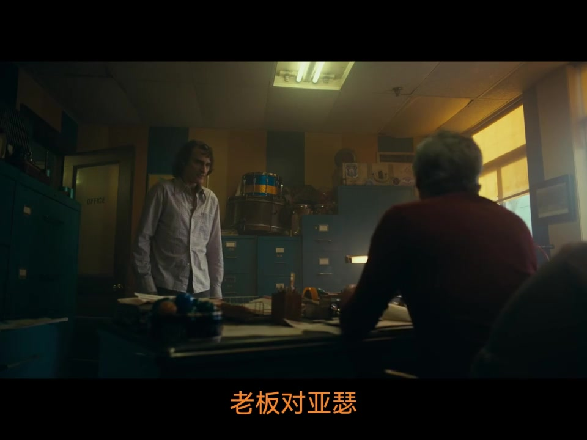
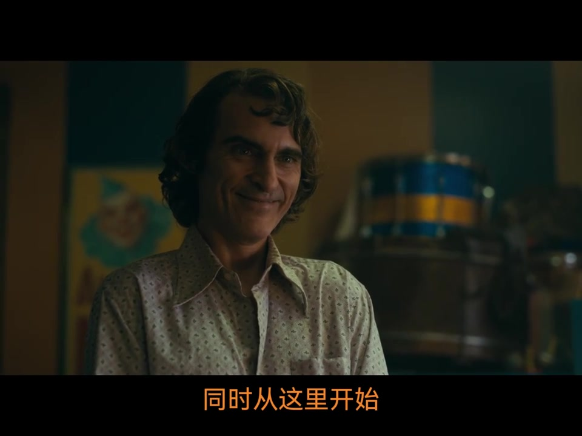
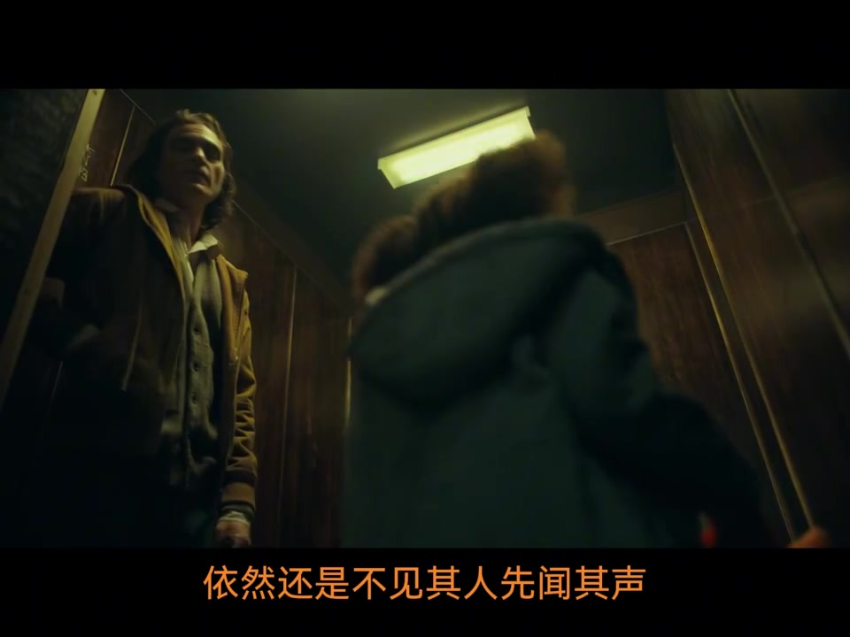
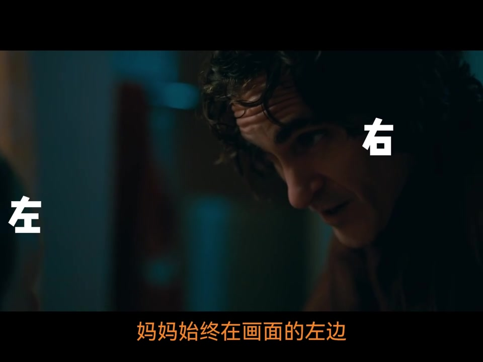
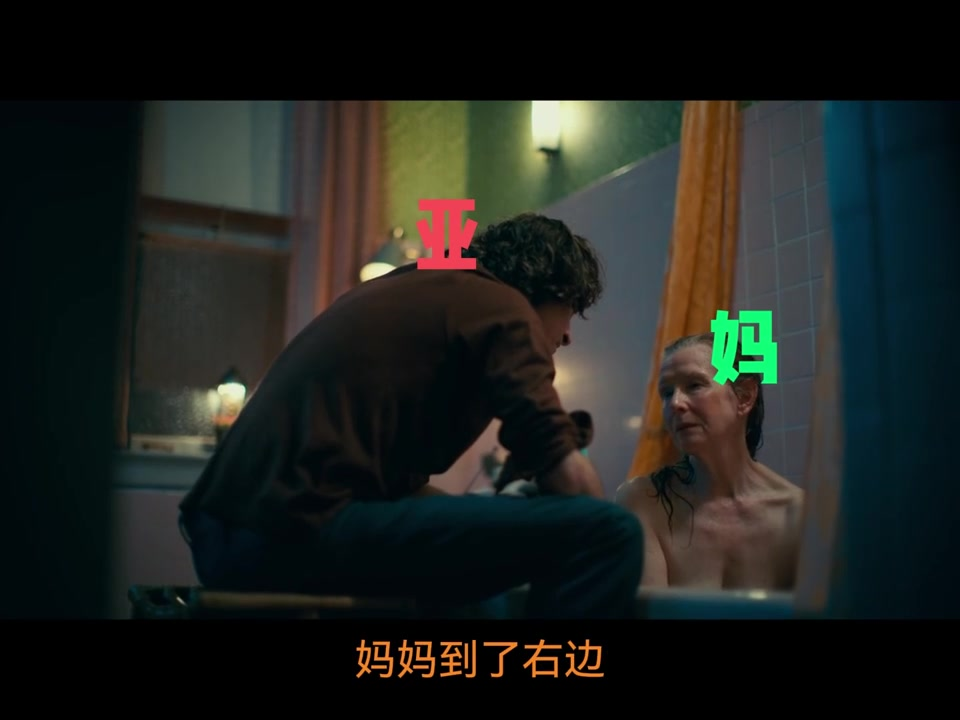
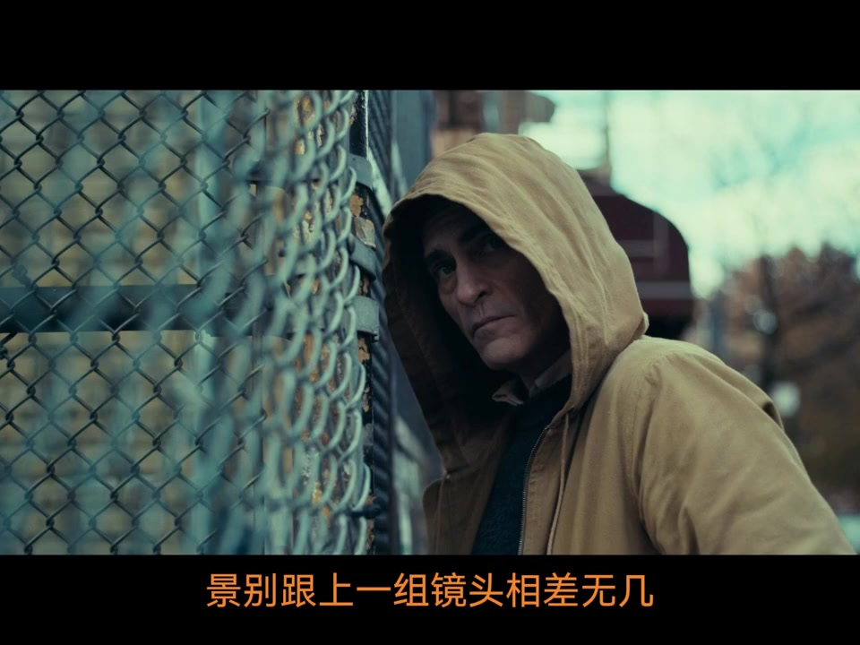
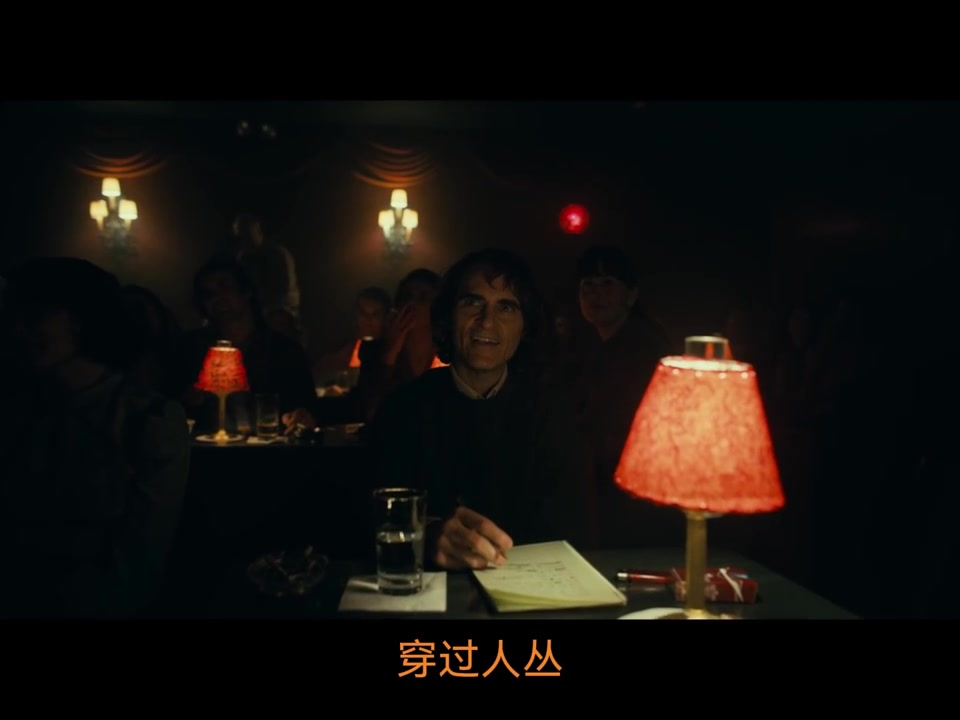
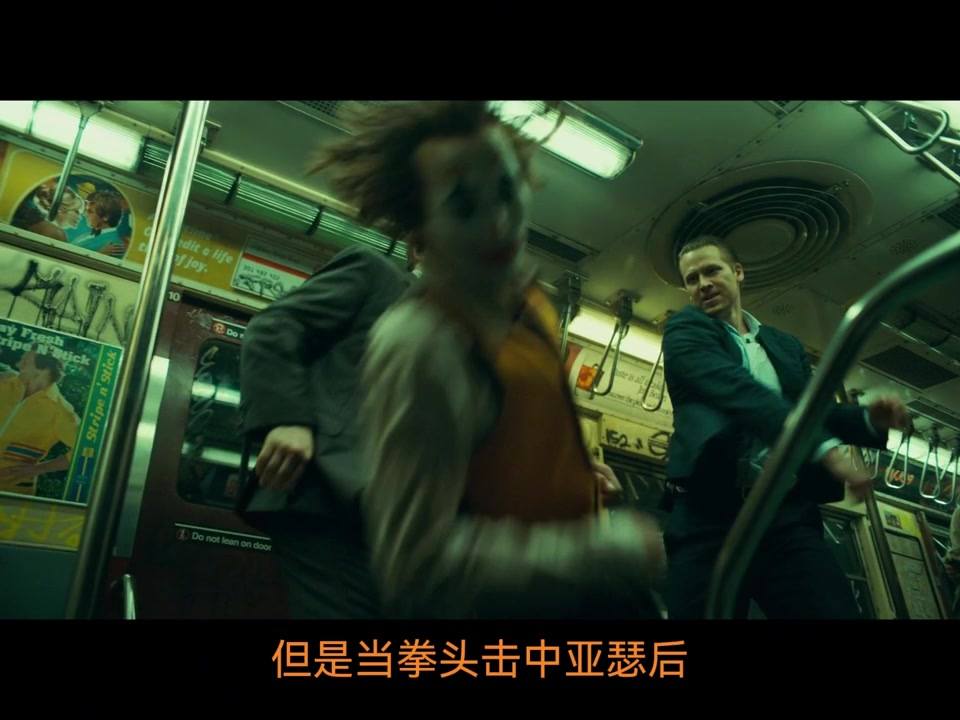

为什么继续拆《小丑》
开场先抛问题：一个好导演如何用画面操控观众情绪？讲述者说明今天继续用《小丑》做案例，并把焦点落在“声画结合”——摄影、音效、音乐、美术等综合手段里，最直接作用于观众的是画面与声音。
说明：Whisper 固定按中文识别时，把“亚瑟/声画/轴线/越轴/景别/畸变/击打/未见其人先闻其声”等听成音近字（如雅瑟、走线、高校、孝声、机变）；下文叙事以可见字幕与画面为准，文末转录区仍完整保留全部原始分段。
老板办公室：假笑底下的怒火还没出口
亚瑟被叫进老板办公室。老板对街头混混欺凌漠不关心，只反复要求归还商店广告牌。亚瑟脸上带笑，心里却已经气愤。讲述者先用这场戏铺垫：如果只看对白，观众只能听到“解释—无视—假笑应和”；真正的愤怒，要等到后面踹垃圾箱才爆发。
可见字幕大致对应：老板对亚瑟被街头混混欺负的事漠不关心；只是不停地要求亚瑟归还商店的广告牌。

由此引出本集核心：听并不是视的附属。音效不只是“画面里有什么就配什么”，还可以提前、压低、引入心跳，让观众在切场之前就进入角色内心。
下一场的踹箱声，提前砸进办公室
当老板强硬要求还回广告牌、听不进解释时，镜头缓缓推向亚瑟；老板说话渐渐压低，类似心跳的音效引入；随后提前灌入下一场踹垃圾箱的声音——一下又一下。等画面再切到巷子里发泄，情绪已经先到了。
可见字幕：“同时从这里开始”“老板说话的声音渐渐压低”“把下一场戏的音效提前”

讲述者强调：这不是剪辑炫技，而是让观众感到亚瑟在老板喋喋不休时已经不耐烦，怒火只差爆发。声效提前是本片频频使用的技巧，后面还会再出现。
电梯里再次“未见其人先闻其声”
亚瑟回家进电梯，邻居女人带着小孩赶上电梯。讲述者指出：新人物登场仍用“未见其人先闻其声”，说明这个技巧在本片里很普遍；细节分析在上集已讲过，感兴趣可回看。

洗澡闲聊：遵守轴线，再故意越轴
亚瑟帮妈妈洗澡，闲聊中提到自己能到大俱乐部表演；妈妈怀疑他不会搞笑。讲述者先补课：分镜切换时，用人物头部连线形成虚拟轴线，摄影机通常保持在同一侧，观众才不会搞混左右位置。
前半段遵守轴线——画面示意妈妈在左、亚瑟在右；最后一个镜头忽然越到对面，妈妈到右、亚瑟到左。越轴不是失误，而是标记气氛与立场变化：从温馨交流，切到妈妈质疑能力。
可见字幕：“妈妈始终在画面的左边”“妈妈到了右边”“通过这个越轴的变化来体现这个转变”


三个场景一路跟，却只花几个切镜头
亚瑟跟踪邻居单身母亲：学校、车站、地铁。这不是重场戏，若完整拍完会啰嗦、打断观影节奏。导演用相近景别与站位控制——仿佛来回对切，实则空间已换；地铁划过画面交代地点，再切回几乎相同景别的亚瑟，人已在车厢里。
可见字幕：“景别跟上一组镜头相差无几”“只用了一个切镜头就让空间转换得流畅自然”

放弃跟踪转身时，再次提前引入下一场脱口秀现场的笑声——笑声在此显得耐人寻味，既是剪辑桥，也是情绪注脚。
长推穿过人群，再决定用长焦还是广角
脱口秀现场先给全景，镜头长距离推进，穿过人群落到亚瑟面前——营造他被埋在人群中、普通而渺小的感觉。接着笔记本上的心里话与极致大特写：特写把注意力钉在表情上，像生活中注意力突然收窄。

讲述者对比两种特写：广角贴近人脸会畸变，适合诡异扭曲；长焦大光圈虚化背景，更亲近、易共情。此处选长焦而非广角——导演不想把亚瑟拍成邪恶反派，而希望制造与观众的共情。并举《少年的你》大量长焦大光圈为例。
女邻居质问跟踪后，亚瑟幽默应对引起兴趣；下一场医院小丑欢快音乐再次声效提前，烘托轻松愉悦。随后被解雇、地铁遭流氓逗弄，转入打戏单元。
假打要有力：中长焦接位，广角低机位砸倒
打戏不能真打，靠接位制造特殊视角让假打像真打。基本手法：中长焦压缩视野、放大晃动，使击打更逼真、更有力。地铁这场：中焦在亚瑟身后，刚好挡住拳头接触点避免穿帮；拳头击中后，切广角低机位全景——亚瑟朝镜头由远到近倒下，广角夸张近大远小，倒地更沉重。
可见字幕：“但是当拳头击中亚瑟后”“忽然切到一个广角的低机位全景”

结尾批评“要求演员真打才敬业”的营销：没有分镜渲染，真打也会绵软；动作电影往往比格斗直播更有力。鼓励演员保护自己、拒绝无理真打。下集继续。
这一集按时间走完了什么
从办公室声效提前，到电梯先声登场、洗澡戏越轴、跟踪高效换场、长推与长焦共情特写，再到地铁打戏的焦段切换——中集把“看不见的情绪”和“看得见的光学选择”串成一条连续观影线。完整口播请见下方原始转录。